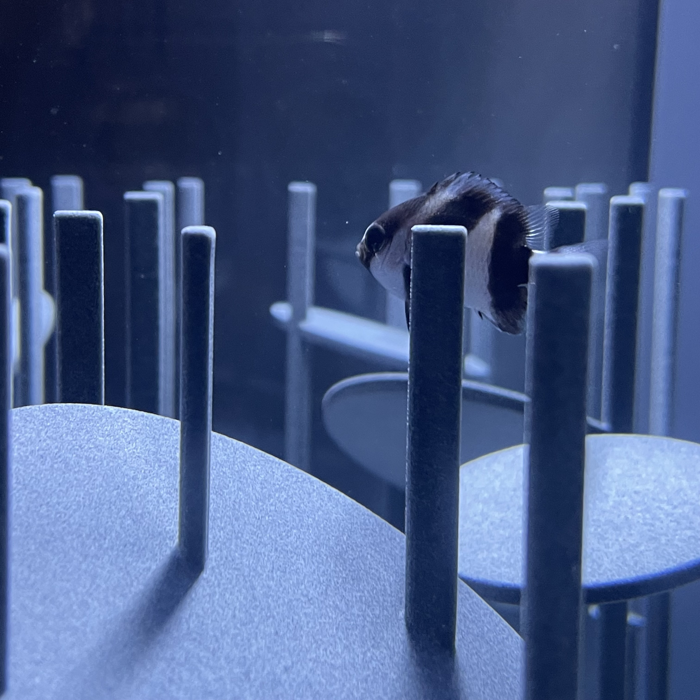
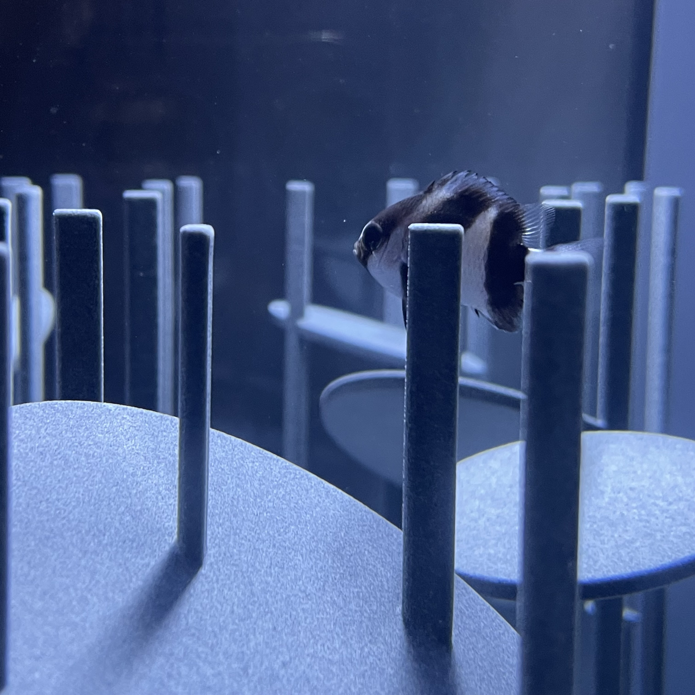

～ 実験方法（やり方）～
2つのサイトを使用して頂いた後、それに関するアンケートへの回答をお願いします。
注意点
・1つは設問に答える診断サイト、もう一つは好きな車の写真or雰囲気の写真(風景、建物、場所など)を
アップロードして、 それらの色味や雰囲気によって診断するものです。
(写真に基づき診断を行うため、結果が出るのに少々時間がかかります。ご了承ください。)
※アップロードされた写真をこちらが確認することも、サーバに保存されることもありませんが、
不安な方は下記から写真をダウンロードして、ご使用ください。
 

アンケートに関しての注意点
・上記2つのサイトを使用し、得られた診断結果をもとに回答をお願いします。
・
途中、車に対してあまり知識がない&興味がないという設定で答えていただきたい設問があります。
そのセクションのみ上記の設定で回答をお願いします。
お時間をとらせてしまい申し訳ありませんが、ご協力をお願いします。